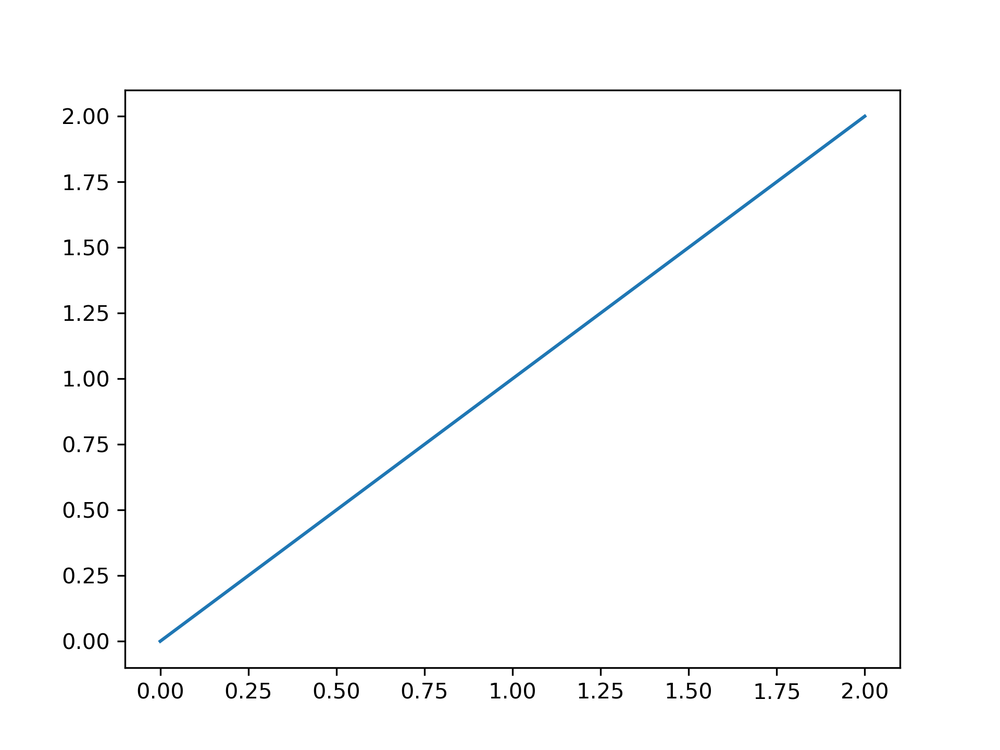

Matplotlib使用教程(一)：图像创建与保存
2020-03-16
# python常用库
# Matplotlib
导入包
1 | import matplotlib.pyplot as plt |
创建一个简单图像
1 | plt.figure() |

还可设置图像分辨率与图像大小
1 | plt.figure(dpi=800, figsize=(10, 5)) |
创建多图像
方法一：subplot创建子图像
1 | # plt.subplot(row_num, column_num, index) |
方法二：plt.subplots创建子图像
1 | fig, axes = plt.subplots(row_num, column_num) |
保存图像
1 | plt.savefig('1.png') |
注意：savefig一定要在plt.show()之前调用，否则会保存空白图片